Electronics Engineer
Contact Me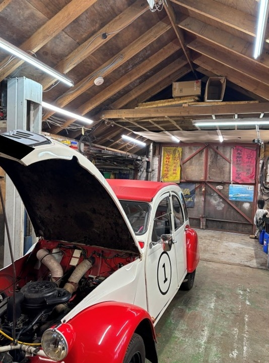
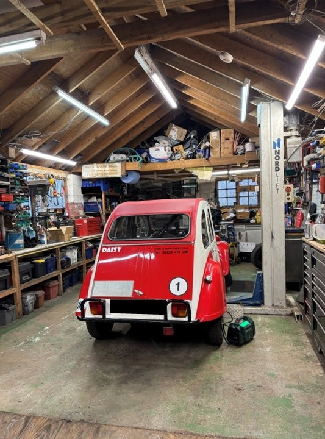
I have helped repair and build engines and gearboxes, I have rubbed down cars and repainted them. I have troubleshooted issues and errors to find fixes and repairs. I have fabricated custom components to strengthen suspension or custom tools to assist in repairing damaged parts.
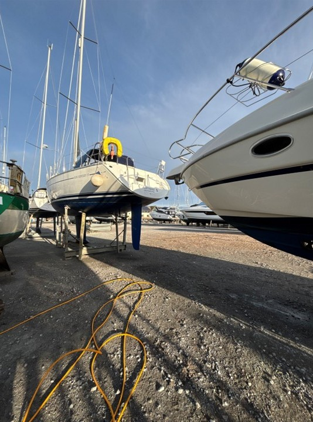
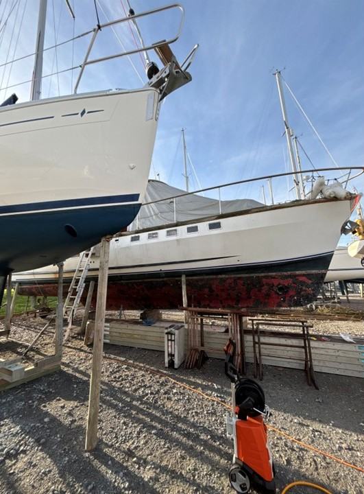
I have worked for 24/7 marine assistance, assisting an engineer troubleshoot issues with boats and yachts while reassuring and comforting families who just want to enjoy the day out on their boat that they envisaged. I have torn down boats and helped rebuild them from the ground up, whether its 12-foot ribs or 40-foot motor boats with multiple cabins.
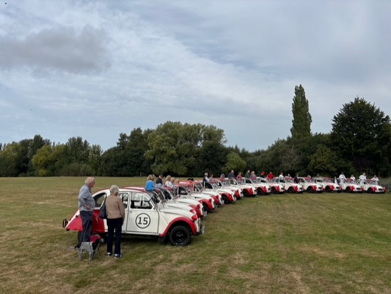
Citreon 2CV's can be a challenging car to drive, they do not have all the bells and histles that modern cars have now-a-days, and one main cause for alarm is their gear stick comes out of the dashboard and is rotated, not from the floor. Due to these differences between them and modern cars clients sometimes have issues in how to use them or where something might be located, like the horn that isn't in the centre of the steering wheel. That's where I come in, to reassure them and help them find what they might need. I also help along the routes with any breakdowns or issues they might face. However, by lunch time everyone always has a beaming smile and is saying how much fun these cars are to drive.
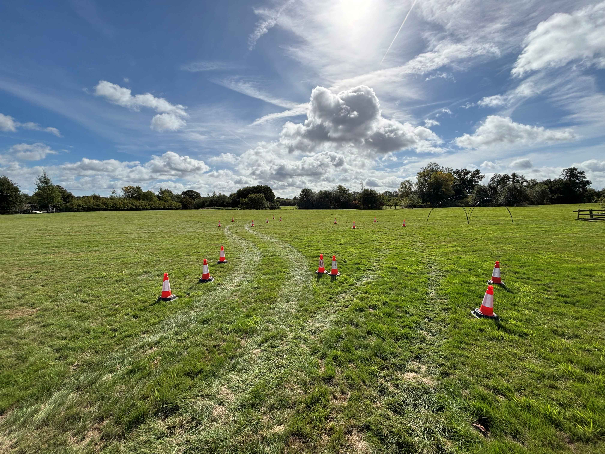
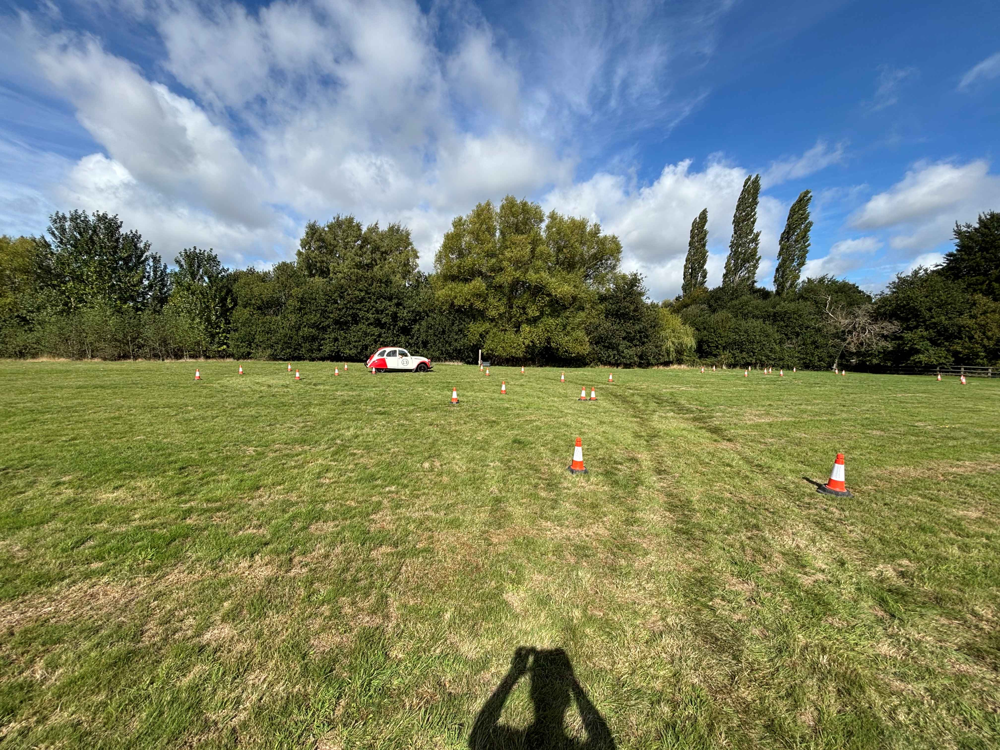
After the rally itself some team building games are hosted. Here I run a team through a slightly modified figure of 8 course that they have to drive a modified 2CV that has reverse steering, so when you turn left you actually go right and vice versa, around in pairs. One person driving and one person navigating. The time it takes them to drive the course, switch roles and drive it again, plus any additional time penalties from hitting cones around the way, is noted. This builds comradery and teamwork between not only the pairs but also the rest of the team, working out what the pair did well or badly and trying to learn from that. What seems like a fun laugh at the end of the day actually brings the people together even more, in pairings they might not be used to, to help corperate teams build on their friendship and teamworking skills.
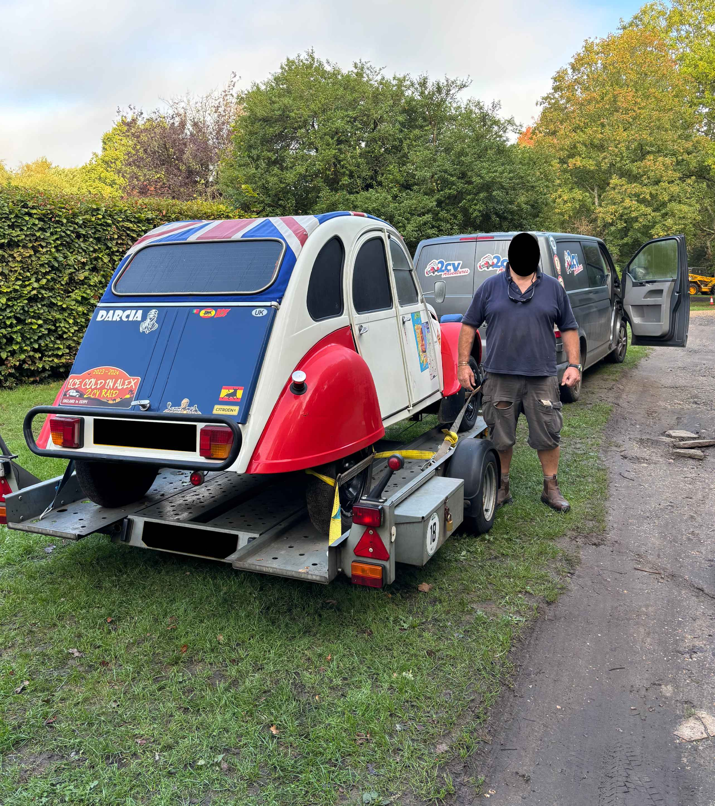
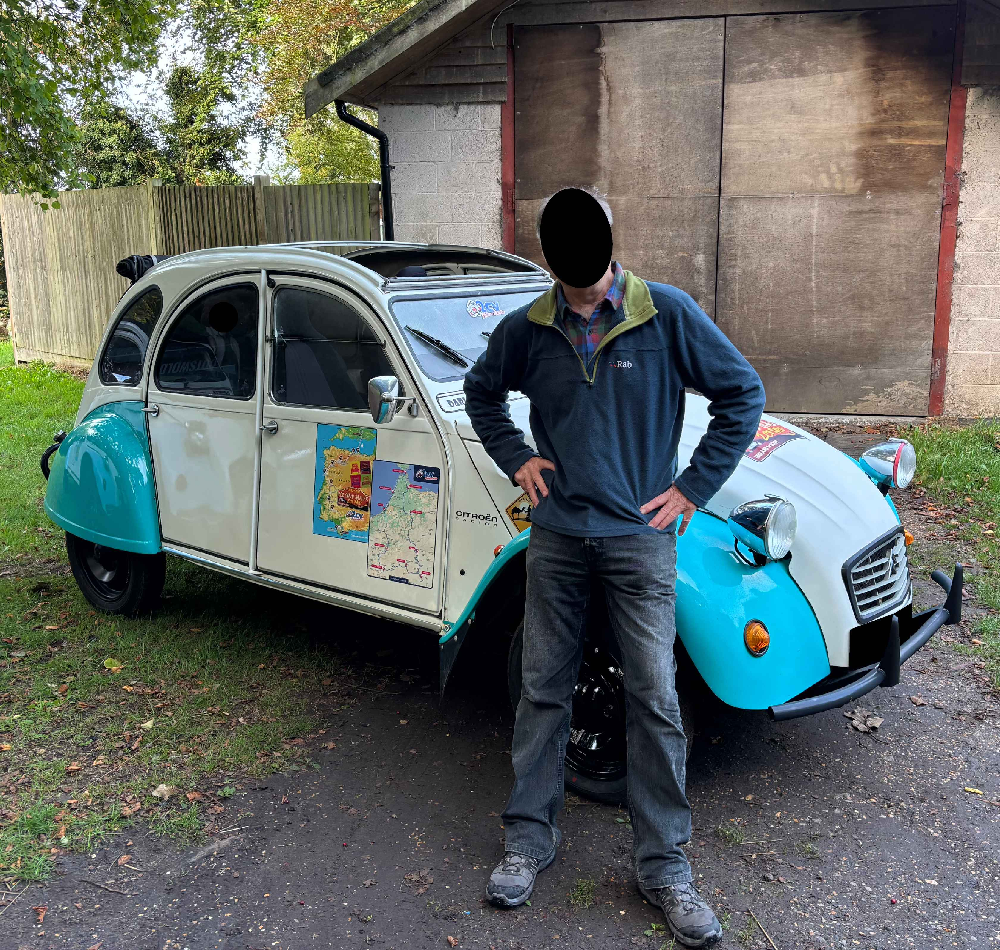
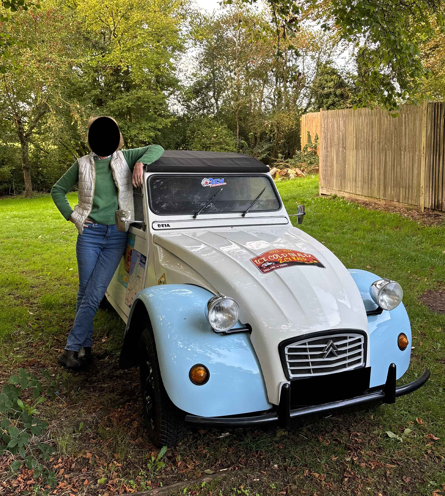
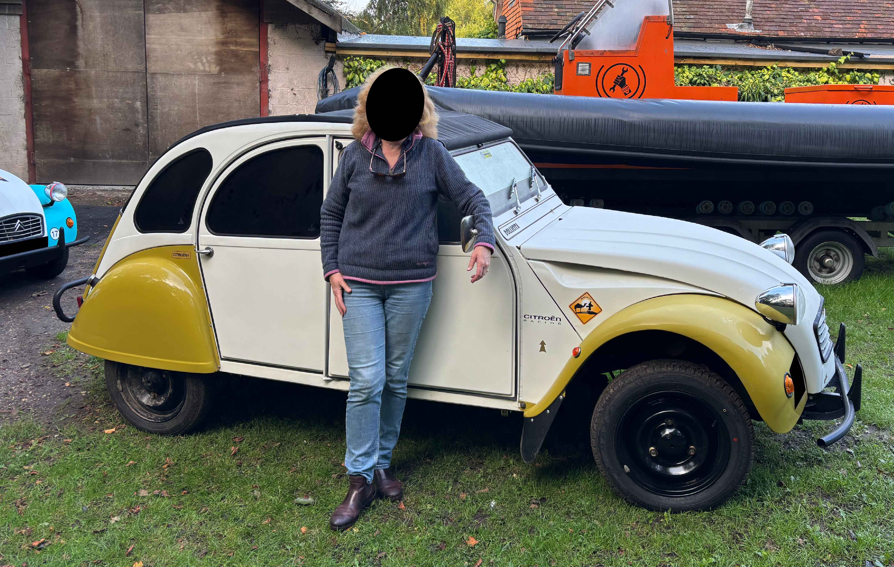
These are four different modified Citreon 2CV's that I helped build from a rusted chassis. Parts needed to be fabricated, rusted holes needed to be repaired, components needed to be assembled and situated. These four 2CV's are currently out in Suriname about to undergo an expedition down into French Guiana, then along into Brazil, then follow the Amazon river into the Amazon Rainforest, cross the Aamzon Rainforest and out into Peru, then head down to Machu Pichu, then finally up along the coast to Lima. This is just the first of 5 rallies they will embark on over the next 3 years that will finally end in Alaska.
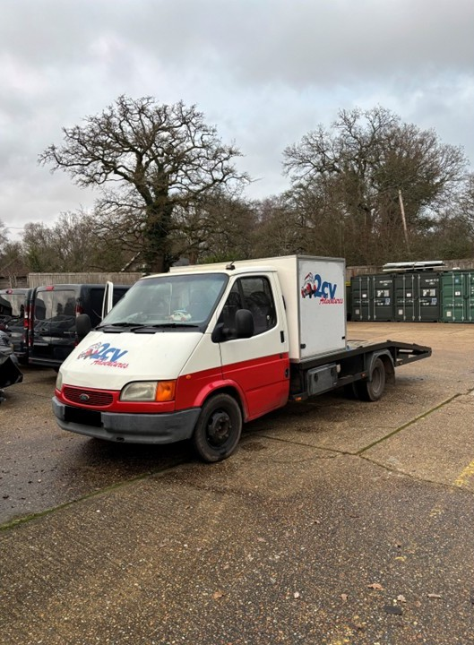
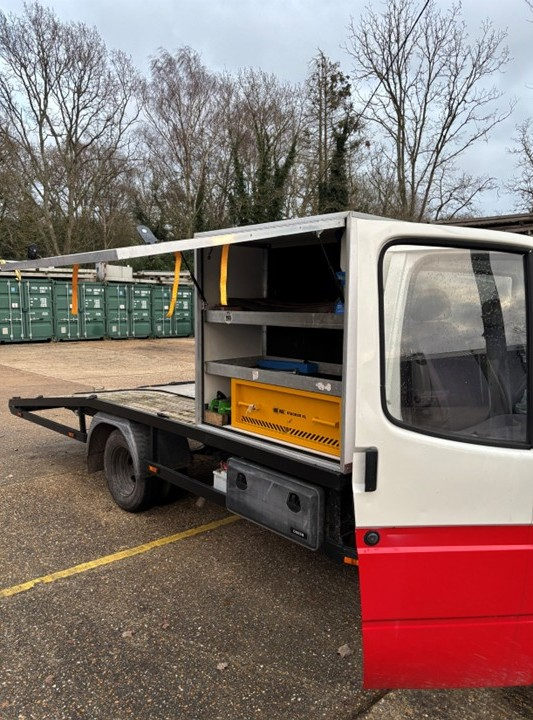
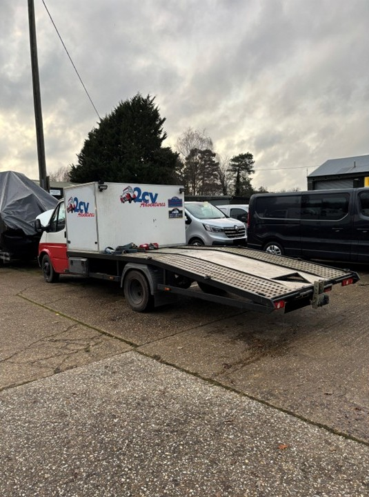
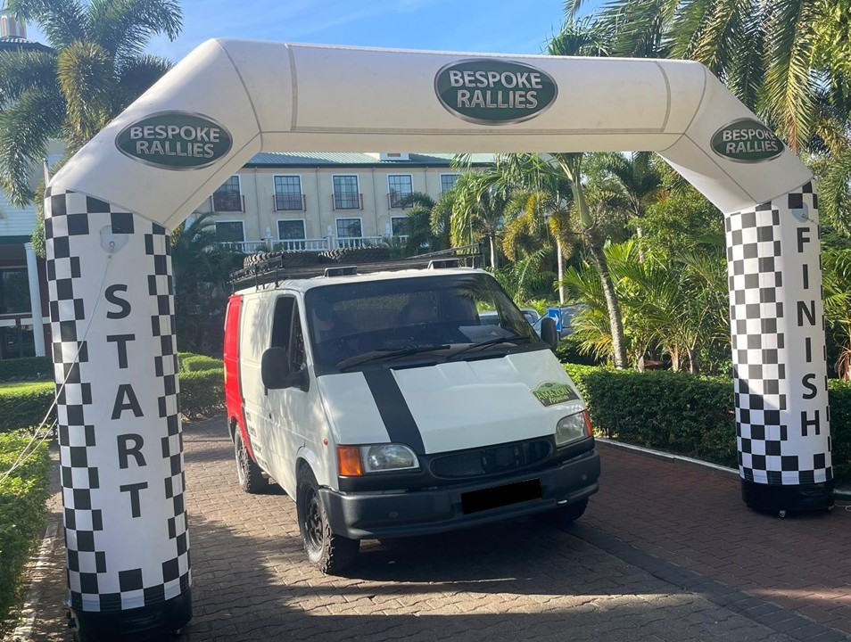
Above is a Ford Transit I helped modify to not only allow for a car to drive on and be transported, but also having an extra storage compartment to keep components and tools for the cars incase there are breakdowns or accidents along the routes. This required upgrading the suspension as well as the chassis to allow for the additional weight and size of the storage locker. Below is another Ford Transit that I helped modify to be fully equipped with everthing these four 2CV's mentioned above need for their 3 years of expeditions, whether is is engines, or gearboxes, or fluids and oils, or spare parts and tools. This support van has it all.